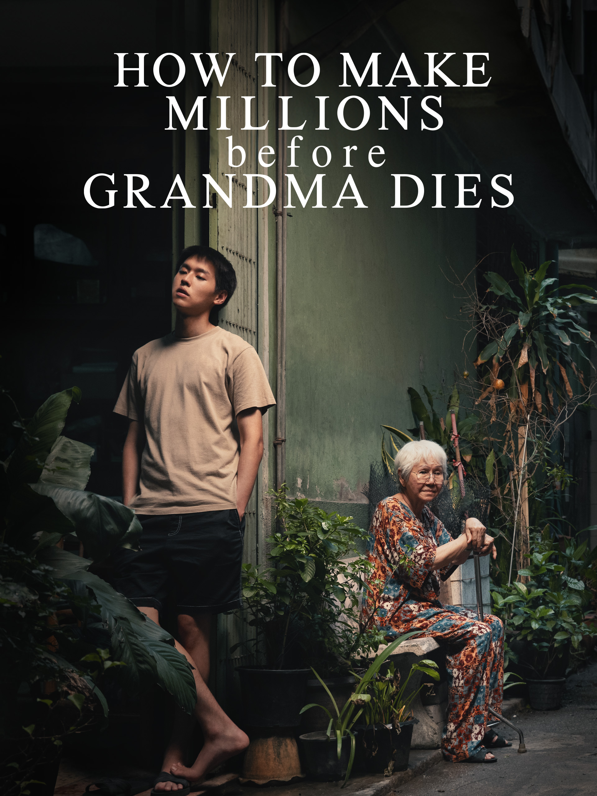

Devil May Cry
Netflix’s upcoming Devil May Cry anime, set to premiere on April 3, 2025, is produced by Adi Shankar (Castlevania) and animated by Studio Mir. The series follows a younger Dante, inspired by DMC3: Dante’s Awakening, with Johnny Yong Bosch voicing the lead.

How to Make Millions Before Grandma Dies
How to Make Millions Before Grandma Dies is a poignant Thai family drama directed by Pat Boonnitipat. The film follows M (Putthipong Assaratanakul), a university dropout who becomes his grandmother Mengju's caregiver, initially to secure her inheritance. As their relationship deepens, M's motives evolve, leading to heartfelt moments that resonate with audiences.

The Gorge
The Gorge is a 2025 sci-fi action film directed by Scott Derrickson, featuring Miles Teller and Anya Taylor-Joy as elite snipers assigned to guard a mysterious chasm. Their isolated posts lead to an unconventional romance, blending elements of horror and action.